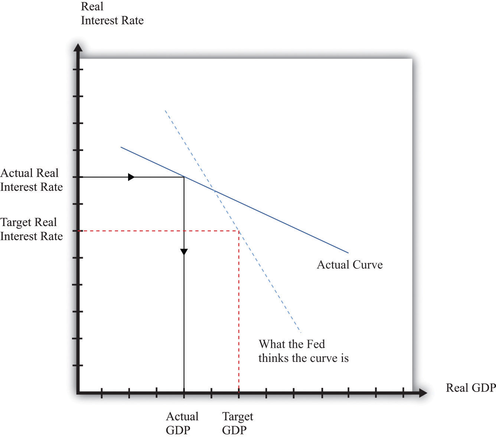

After you have read this section, you should be able to answer the following questions:
We finish this chapter by going back to the actual actions of the Fed and focusing on two periods. First, we consider the Great Depression from a monetary perspective.Chapter 22 "The Great Depression" discusses that period in more detail and pays more attention to fiscal policy. Then we consider the period leading up to the February 2005 announcement.
The Fed was in fact not very active during the Great Depression (some commentators might even say that this section should be titled “The Fed Inaction”). Yet monetary events were still critical.
A key short-term interest rate at that time was the so-called commercial paper rate. This rate decreased from about 6 percent in 1929 to a low of 0.8 percent by 1935. At first glance, therefore, it seems as if the monetary authority was implementing cuts in interest rates that could stimulate the economy. On closer examination, however, the picture is not so simple. During the Great Depression the inflation rate was negative—prices were decreasing on average. From the Fisher equation, a negative inflation rate means that the nominal interest rate understates the cost of borrowing. Decreasing prices mean that the nominal interest rate is smaller than the real interest rate. Even though nominal interest rates were decreasing in the early 1930s, the inflation rate was decreasing faster. As a result, the real interest rate increased. It became more expensive for households and firms to borrow, so spending decreased.
When prices decrease, the obligations of borrowers increase in real terms. People at the time did not typically anticipate these decreasing prices, so there was unanticipated deflation. Unanticipated deflation redistributes wealth from borrowers to lenders. Many firms, banks, and households were left with large (real) debts during the Great Depression. These led to bankruptcies and contributed to the contraction in economic activity.
Thus along with the high real interest rates came a series of bank failures. In addition, banks tended to hold more in excess reserves during this period, and thus loans, relative to deposits, decreased. These banking problems meant that the financial markets became less effective at connecting the savings of individual households with the investment plans of firms. It is perhaps not surprising that investment and spending on consumer durable goods decreased so much during the Great Depression.
In retrospect, the monetary authority could have been much more aggressive in dealing with the high real interest rates. They could have conducted open-market operations, buying bonds and decreasing interest rates. At the same time, this would have provided additional funds (sometimes called liquidity) to the banking system. Yet the Fed did not do so. Many observers now think that the severity of the Depression can be blamed in large part on these failures of the Fed. If so, this is good news, for it tells us that we are much more likely to be able to avert similar economic catastrophes in the future.
Here is a brief summary of the target federal funds rate over the period from June 1999 to May 2005. Remember that these are nominal interest rates.
We have already examined these targets, together with the actual federal funds rates, in Figure 25.3 "Target and Actual Federal Funds Rate, 1971–2005".
The time of tighter monetary policy, from June 1999 to January 2001, was a period of inflation concern. In the first part of 1999, the inflation rate averaged about 2 percent, and the unemployment rate was decreasing, reaching 4 percent in May 1999. Even though inflation was low, the Federal Open Market Committee (FOMC) statement from June 1999 called for an increase in the target federal funds rate, pointing to potential inflation as a rationale for increasing the target rate: “The Committee, nonetheless, recognizes that in the current dynamic environment it must be especially alert to the emergence, or potential emergence, of inflationary forces that could undermine economic growth.”Federal Open Market Committee, “Press Release,” Federal Reserve, June 30, 1999, accessed August 8, 2011, http://www.federalreserve.gov/boarddocs/press/general/1999/19990630/default.htm. The Fed’s tightening had the effect of reducing durable spending and thus bringing gross domestic product (GDP) down closer to potential output. As a consequence, there was less pressure on prices.
This policy continued through January 2001. By that point, the United States was very close to recession. (According to the National Bureau of Economic Research Business Cycle dating group, a recession began in March 2001.) From December 2000 to January 2001, the unemployment rate jumped from 3.7 percent to 4.7 percent. The Fed responded by allowing the federal funds rate to decrease steadily, starting in February 2001. This policy led to a federal funds rate of 1 percent by July 2003, a level that was maintained for a year. Historically, this was a very low rate. Over the year, inflation averaged about 2.3 percent, so the real federal funds rate was actually negative.
A turnaround in Fed policy occurred in August 2004. Inflation had started to increase somewhat in early 2004, and the unemployment rate had decreased to 5.3 percent in May 2004. So in August 2004, the Fed started a gradual increase of the target federal funds rate. Look back at Figure 25.4 "Short-Term and Long-Term Interest Rates". Recall that part of the monetary transmission mechanism is the link between the nominal federal funds rate, which is very short term, and much longer-term rates. Figure 25.4 "Short-Term and Long-Term Interest Rates" shows the federal funds rate along with the 1-year and 10-year Treasury bond yields. The loosening of monetary policy in February 2001 is evident from the decrease in the federal funds rate and the 1-year Treasury rate.
But the long-term Treasury rate seems not to follow the short-term rates that closely. In fact, it seems that the long-term rates started to decrease before the reductions in the federal funds rate began, and then the long-term rates did not decrease nearly as much over the February 2001–August 2004 period. After that time, although the federal funds rate was increased, the long-term rate did not respond much at all.
This reminds us of one the biggest challenges of monetary policy. Although the Fed is able to closely target the federal funds rate, it has much less ability to control longer-term rates. Someone making a loan for a long period of time will try to anticipate economic events over the course of the entire loan period. As a consequence, the loan rate may reflect anticipated events (such as the Fed’s loosening of monetary policy in February 2001) and may also not respond as much to rate changes that are seen as temporary.
We have made monetary policy look easy. The effects of the actions of the monetary authority are summarized by Figure 25.2 "The Monetary Transmission Mechanism". Given a choice of a target inflation rate and a target level of economic activity, the Fed (and other central banks) ought to know exactly what to do to reach these goals. So why are central bankers so vital to the functioning of the macroeconomy?
In Section 25.3.3 "Closing the Circle: From Inflation to Interest Rates", we described the Taylor rule as relating the target federal funds rate to the state of the economy, specifically the inflation rate and the output gap. As a matter of theory, this is straightforward to describe. The practice is rather harder.
First, it is a significant challenge simply to know the current state of the economy. In the United States, part of the preparation for FOMC meetings is an attempt to figure out the current output gap and other variables. The Board of Governors of the Federal Reserve has a large staff of professional economists, as do the various regional Federal Reserve banks. These economists spend much of their time helping the members of the FOMC understand the current state of the economy.
One particular problem is that the level of real GDP itself is calculated only on a quarterly basis. Potential GDP, meanwhile, is a theoretical construct that requires some guesses about “full employment.” It is not directly measured. So if the Fed learns that real GDP is growing rapidly, it has to judge whether this is because potential GDP is growing rapidly or because actual GDP is above potential.
Since the Fed does not meet to determine policy each day and the Fed’s policies themselves take time to work through the economy, it is not even enough to know the current state of the economy. The FOMC must also forecast the state of the economy for the near future. One talent of the previous Fed chairman, Alan Greenspan, was apparently his use of relatively unorthodox sources to get a sense of the state of the economy.
Even if there were no uncertainty about the current state of the economy—that is, the inflation rate and the output gap—monetary policy is still difficult for other reasons. First, as we emphasized earlier, the Fed does not have direct control over the long-term real interest rates that matter for durable goods spending. The Fed can influence a short-term nominal rate, which in turn influences the long-term real rates. But the exact link from one interest rate to the other is not known by the Fed and may change over time. The Fed may fail to achieve the long-term rate that it is aiming for.
Second, the Fed does not have perfect knowledge of the monetary transmission mechanism. Consider again the links between real interest rates and output, as shown in Figure 25.10 "The Relationship between the Real Interest Rate and Real GDP". In reality, the Fed does not know exactly what the relationship between interest rates and output looks like. Reality looks more like Figure 25.23 "Controlling the Economy". In this picture the Fed is aiming for a high level of output. However, it misses its target real interest rate and actually ends up setting a higher real rate than it wanted. In addition, real GDP is more sensitive to interest rates than it thought, so the high rate leads to a big reduction in GDP. Thus because the Fed fails to achieve its target interest rate and also misjudges the monetary transmission mechanism, it ends up with much lower real GDP than it wanted.
Finally, the Fed has imperfect knowledge of the link between economy activity and price adjustment. Recall that the price setting equation stipulates that inflation depends on the output gap and something called autonomous inflation. As we have seen, this last term captures several factors, including the influence of expectations about the future on current price-setting behavior. This presents a double challenge to the Fed. First, to evaluate the effects of its policy on prices, the Fed needs to know the expectations that underlie autonomous inflation. Second, the Fed must recognize that its actions and statements influence these expectations. This is why the individuals involved in the making of monetary policy are so careful both about what they do and about what they say about what they do.
Figure 25.23 Controlling the Economy
The Fed’s ability to control the economy depends on how knowledgeable it is about the state of the economy and on how accurately it can target interest rates.
We know that the goals of the Fed include price and output stability. Sometimes these goals conflict, and when they do, the task of central bankers becomes even more complicated.
The FOMC statement with which we opened this chapter stated that the “Committee perceives the upside and downside risks to the attainment of both sustainable growth and price stability for the next few quarters to be roughly equal.” But what if instead it had said the “Committee perceives the risks of low output growth and high inflation for the next few quarters to be roughly equal”? What would the appropriate monetary policy be in this case? Should the Fed use its power to stabilize prices or to promote economic activity?
The tension is evident from the Taylor rule. Here is an example: the target real interest rate increases when inflation is high and decreases when the output gap is high:
real interest rate = −(1/2) × (output gap) + (1/2) × (inflation rate − 4 percent).Remember that a positive output gap means that that the economy is in a recession: actual GDP is below potential. When the economy is in recession and inflation is not very high, the Taylor rule says that the Fed should reduce the real interest rate. And—from this same rule—the Fed should increase the real interest rate in the face of high inflation and a negative output gap. But what should the Fed do when inflation is high and there is a recession? High inflation argues for increasing real interest rates, but a positive output gap argues for a cut in rates.
The Fed—and, indeed, monetary authorities throughout the world—faced exactly this conflict in the mid-1970s when oil prices increased substantially as a result of actions by the Organization of Petroleum Exporting Countries. Researchers who have examined data over the past three decades have found that an increase in oil prices is typically met with an increase in the federal funds rate.The following discussion elaborates on the Fed’s response to oil price increases: Federal Reserve Bank of Cleveland, accessed July 20, 2011, http://www.clevelandfed.org/Research/inflation/Readingroom/Viewpoint/2005/oil-prices-economy04-05.cfm. A speech by then Fed Governor Ben Bernanke in 2004 provides more details: “Remarks by Governor Ben S. Bernanke at the Distinguished Lecture Series, Darton College, Albany, Georgia,” Federal Reserve, October 21, 2004, accessed July 20, 2011, http://www.federalreserve.gov/boardDocs/speeches/2004/20041021/default.htm. Thus, when faced with conflicting goals stemming from an oil price increase, the Fed seems to have put more weight on the goal of price stability.
Everything that we have talked about in this section helps to explain why central bankers must be skilled and knowledgeable individuals with a good grasp of both economics and the workings of financial markets. Still, we have essentially been describing the job of a technocrat. Central bankers really earn their salaries in abnormal rather than normal times.
Starting in 2007 and stretching well into 2008, the United States and other countries began to experience financial crises that were similar in some ways to those experienced in the Great Depression.The financial crisis of 2008 is discussed in Chapter 19 "The Interconnected Economy" and Chapter 30 "The Global Financial Crisis". The crisis seemed to begin innocently enough, with a decrease in housing prices that left some people unable or unwilling to cover their mortgage payments. But because of the way financial markets work, it became very hard for lenders to work out which of their assets were “nonperforming”—that is, unlikely to be repaid. As a result, financial markets froze up.
Part of the Fed’s response was an aggressive use of the tools that we have described in this chapter. For example, the Fed reduced the federal funds rate down to 0.25 percent. At that point, the Fed had just about reached the limit of what was possible with monetary stimulus. The problem is that nominal interest rates cannot go below zero because cash has a nominal interest rate of zero. If you keep a dollar bill from this year to next year, it is worth $1 next year. Therefore it would always be better just to keep cash rather than invest in an asset with a negative nominal return. The Fed had hit what is known as the zero lower boundThe fact that the Fed cannot push nominal interest rates below zero..
Even though it was at the zero lower bound, the Fed still had other options. In normal circumstances, it operates in the economy by buying and selling short-term government debt, one of the many assets in the economy. But these were highly abnormal circumstances, and it is possible for the Fed to buy and sell other assets as well. This is what the Fed did. During the crisis, the Fed started purchasing many other assets, such as commercial paper. In other words, instead of just lending to banks, the Fed started lending directly to firms in the economy. Central banks in some other countries, such as the United Kingdom, pursued similar policies.Explaining what happened in 2008 involves understanding the actions of the Fed, but it requires many of our other tools as well. For that reason, we take up this crisis in more detail in Chapter 30 "The Global Financial Crisis".